El evangelismo y la vida de tu iglesia, en una sola app.
La Mies ayuda a tu iglesia a salir a evangelizar, a no perder a ninguna visita y a ordenar toda la semana: asistencia, finanzas, clases, Biblia y mucho más.
Sin tarjeta · Lista en 5 minutos · iPhone, Android y computadora
Hecha por la Iglesia Bautista Victoria, de Posadas, Misiones, Argentina, y usada primero por sus propios hermanos. Nació del trabajo de cada semana, no de una oficina.
Mucho trabajo fiel. Todo disperso.
- Mapas de papel
- El cuaderno de contactos
- Planillas de asistencia
- Diez grupos de WhatsApp
- Carpetas de recibos
- Formularios sueltos
Todo lo que tu iglesia hace en la semana, en un solo lugar.
Así se ve por dentro.
Un recorrido real por la app, con una iglesia de ejemplo. Toca cualquier parte de la lista para ir a ese momento.
- InicioEl versículo del día y los anuncios.
- AsistenciaTocas las caras de quienes vinieron.
- FaltaronQuién faltó, con el WhatsApp listo.
- InformeLa semana, ya armada.
- FinanzasFondos, ingresos y gastos.
- Grupos pequeñosLa prédica con sus preguntas.
- La BibliaPara leer y escuchar.
El mapa de tu ciudad, marcado solo.
Sales a evangelizar y la app marca cada cuadra que caminas. Se acabó el mapa de papel y el “¿por acá ya pasamos?”.
- Ves qué calles ya se visitaron y cuáles faltan
- Cada contacto queda guardado con su dirección
- Equipos, zonas y resultados de cada salida
Que nadie se pierda.
La app te dice quién faltó y a quién hay que escribir o visitar esta semana. El mensaje de WhatsApp ya está listo.
- Lista de quienes faltaron 1, 2 o 3 semanas
- Visitas nuevas: bienvenida, regalo y visita a su casa
- Cada líder ve a quién le toca seguir
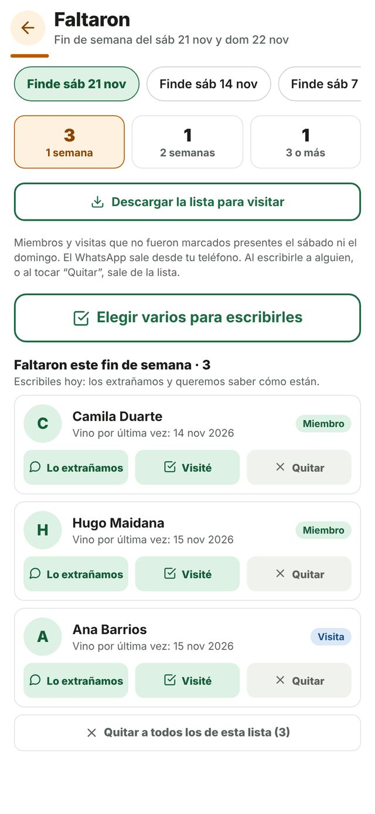
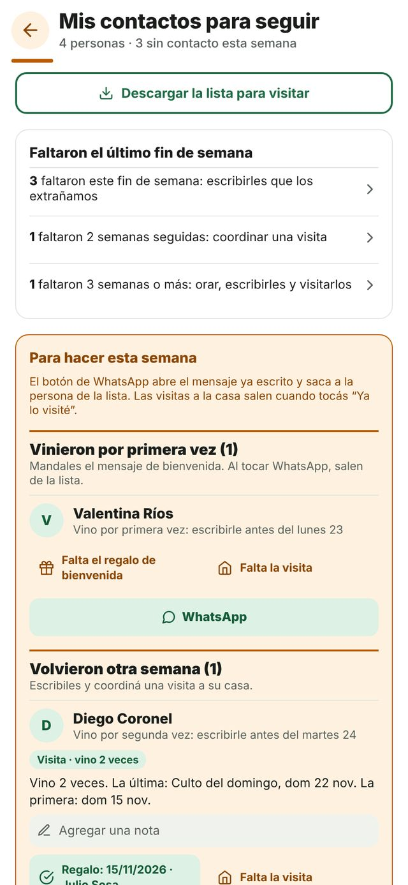
Tocas las caras y listo.
Tomar asistencia lleva un minuto desde el teléfono. Sin planillas y sin pasar nada en limpio el lunes.
- Por reunión y por clase
- Anotas a las visitas nuevas ahí mismo
- También con credenciales con chip, para iglesias grandes
Empieza hoy. Los primeros 4 meses son gratis.
Todas las funciones, sin tarjeta.
El informe de la semana, ya armado.
Asistencia, visitas, evangelismo y clases, en una hoja lista para compartir. Y el progreso de la iglesia, mes a mes.
- Se arma solo con lo que la iglesia ya cargó
- Lo mandas por WhatsApp o por correo
- Ves si la iglesia crece, con números reales
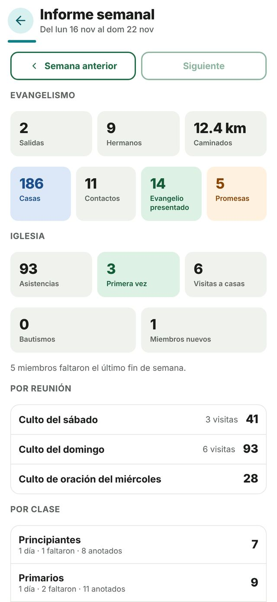
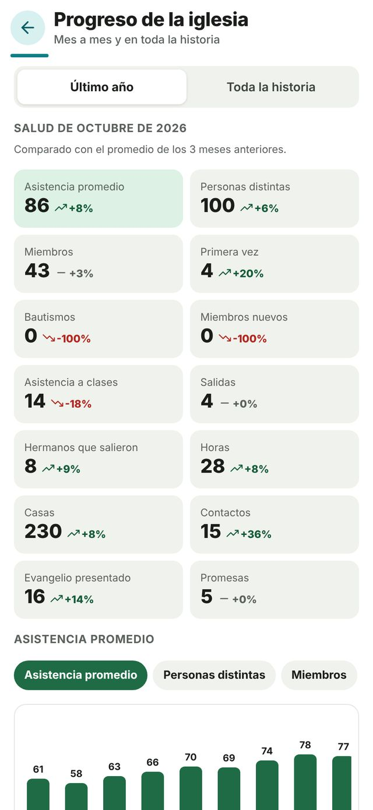
Las cuentas de la iglesia, claras y al día.
Ofrendas, gastos y fondos en un solo lugar, con la foto de cada comprobante. Solo lo ven las personas autorizadas.
- Fondos separados: general, misiones, construcción
- Cada gasto con su comprobante guardado
- Informes por mes, listos para presentar
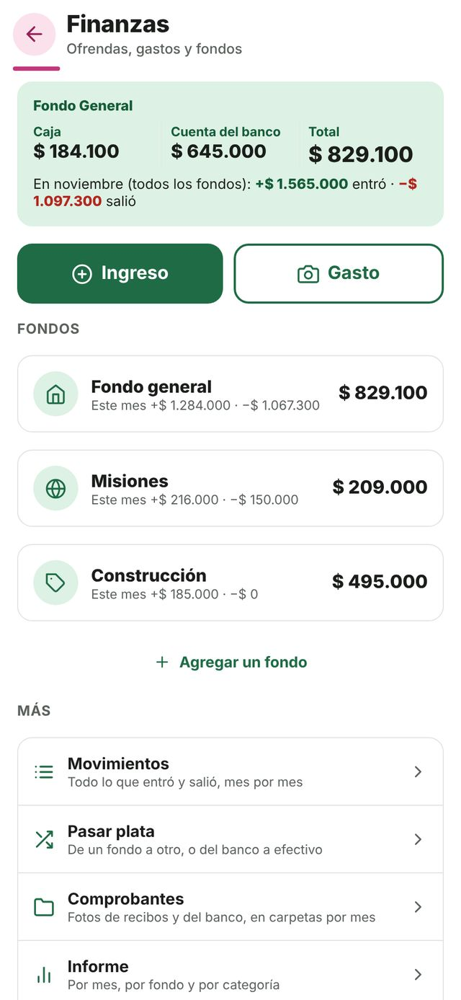
Enseñar es más fácil.
Cada clase con sus maestros, sus alumnos y su lección. Y grupos pequeños que repasan la prédica del domingo con las preguntas listas.
- Turnos de maestros y asistencia por clase
- El líder abre el grupo y ya tiene la guía
- La gente pide sumarse a un grupo desde la app
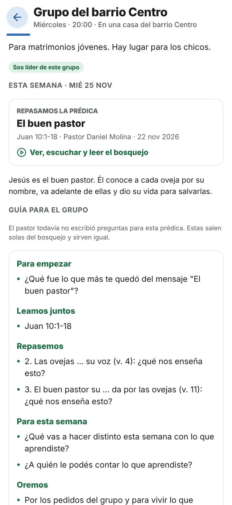
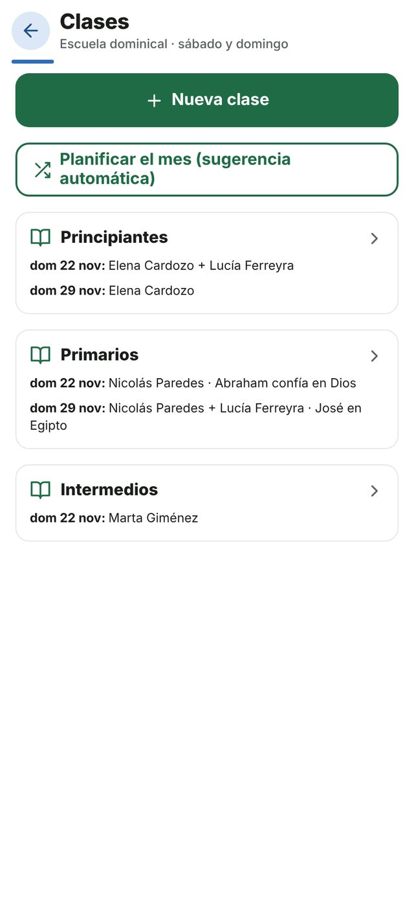
Tu iglesia puede estar usando esto este domingo.
Anotarla lleva 5 minutos.
La Biblia y el devocional, cada día.
Toda la iglesia leyendo lo mismo cada mañana. La Biblia completa para leer y escuchar, y las prédicas para volver a oír.
- Versículo del día y devocional de tu iglesia
- Biblia con audio, notas y planes de lectura
- Prédicas con video, audio y bosquejo para completar
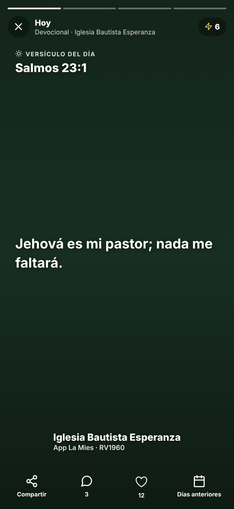
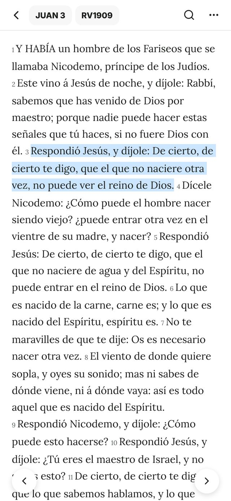
Toda la iglesia, en un solo lugar.
Los anuncios del pastor, el chat de la iglesia y los pedidos de oración, ordenados. Ya no se pierde nada entre diez grupos de WhatsApp.
- Anuncios a toda la iglesia o a un grupo
- Chat con mensajes de voz
- Pedidos de oración y oraciones respondidas
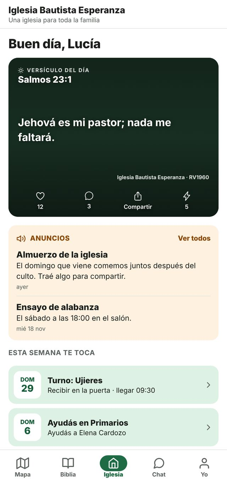
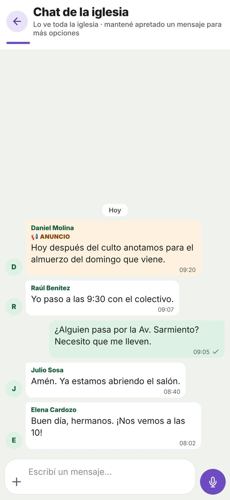
Un evento, de la inscripción a la puerta.
Planificas el evento, la gente se anota desde una página y entra con su código. Sabes cuántos vienen antes de que lleguen.
- Página pública para anotarse
- Entradas con código QR y control en la puerta
- Programa, oradores, voluntarios y tareas
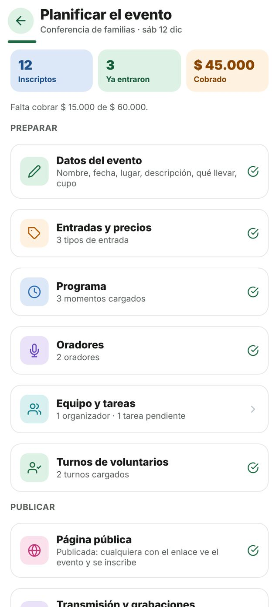
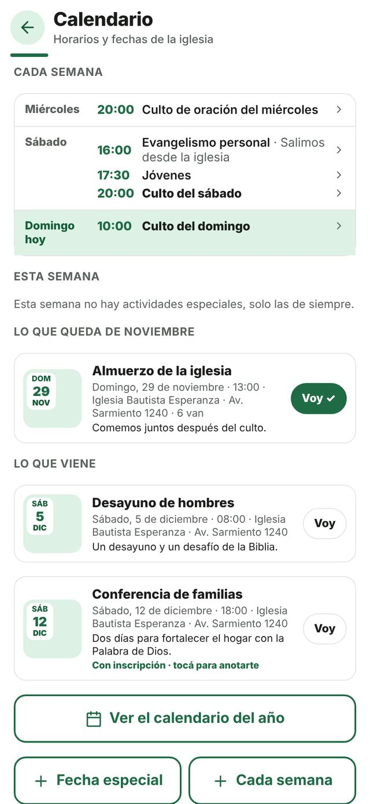
Una sola app para toda la semana de tu iglesia.
4 meses gratis para empezar.
Los chicos, bien cuidados.
Cada niño entra con su etiqueta y solo se retira con el adulto que lo trajo. Y el bus de la iglesia avisa cuando está por llegar.
- Entrada y retiro de niños con código
- Lista de pasajeros de cada ruta
- Aviso de “llegamos en 10 minutos” por WhatsApp
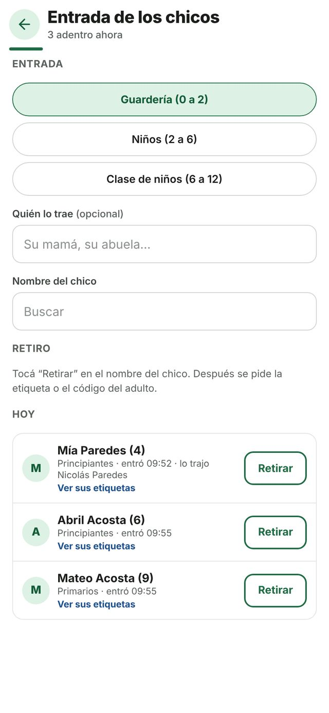
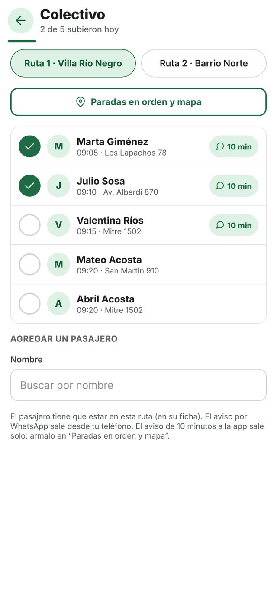
Las letras y la Biblia, en el proyector.
Armas la lista del culto y la app muestra las canciones, los pasajes y los anuncios en la pantalla. Se maneja desde el teléfono.
- Canciones, versículos, fotos y videos
- Vista para el escenario y control remoto
- Sin programas aparte
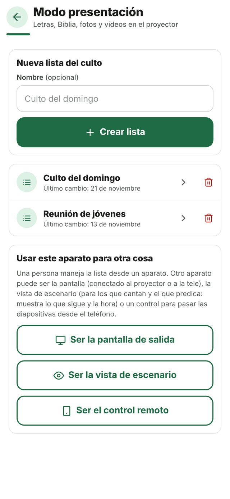
Para el pastor y la secretaría, en pantalla grande.
La misma app, con un escritorio pensado para trabajar cómodo: personas, asistencia, finanzas e informes.
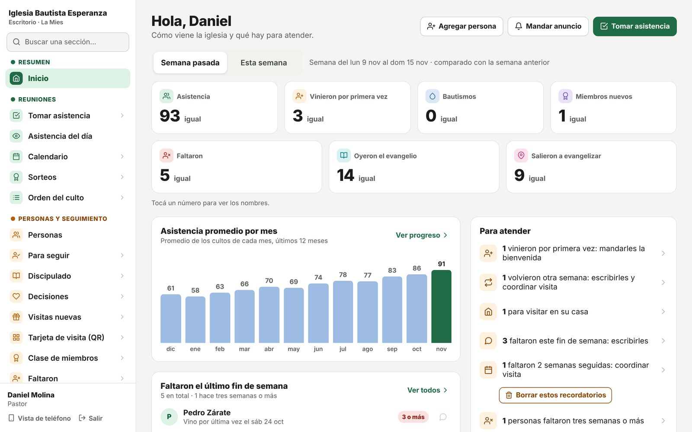
- Cumpleaños con saludo listo
- Culto en vivo
- Cancionero
- Radio de la iglesia
- Sorteos
- Certificados de bautismo
- Misioneros
- Directorio de la iglesia
- Ubicación en familia
- Mensajes privados al pastor
- Importar desde Excel
- En español y en inglés
- Roles y permisos
- Cada iglesia enciende solo lo que usa
Todas las funciones, para toda tu iglesia. Sin tarjeta y sin compromiso. Primero ves los resultados; después decides.
Hasta 100
Hasta 300
Hasta 600
Hasta 1.000
Hasta 3.000
Precios en dólares por mes. Se pueden pagar en pesos al valor del dólar del día.
Tres pasos. Cinco minutos.
Anota tu iglesia
Llenas una hoja con el nombre de la iglesia y tus datos. La iglesia queda creada en el momento, sin esperar a nadie.
Trae a tu gente
Subes tu lista desde Excel o la cargas a mano. La app te guía paso a paso y eliges qué funciones usar.
Invita a los hermanos
Compartes el código de la iglesia por WhatsApp o con un cartel con QR. Cada uno entra desde su teléfono.
Entonces dijo a sus discípulos: A la verdad la mies es mucha, mas los obreros pocos. Rogad, pues, al Señor de la mies, que envíe obreros a su mies.Mateo 9:37-38 (RV1960)
Los datos de tu iglesia, solo para tu iglesia.
Cada iglesia ve solo lo suyo
Nadie de otra iglesia puede ver tus personas, tus finanzas ni tus informes.
Roles y permisos
Tú decides quién ve cada cosa. Las finanzas, solo las personas autorizadas.
Verificación en dos pasos
Y bloqueo de la app con huella o con la cara.
Sin publicidad
La app no muestra anuncios ni vende datos.
Tus datos son tuyos
El pastor puede bajar una copia de todos los datos de su iglesia.
Ubicación con permiso
Solo se usa cuando la persona la enciende, y la app lo explica antes.
Respuestas claras.
¿Cómo empiezo?
Tocas “Sumar mi iglesia”, llenas una hoja de 5 minutos y tu iglesia queda creada. Se usa desde el navegador de cualquier teléfono o computadora, y la app para iPhone y Android está por salir en las tiendas.Se usa con la app de App Store o Google Play, y también desde el navegador de una computadora.
¿Cuánto cuesta?
Los primeros 4 meses son gratis. Después, desde $29 por mes para iglesias de hasta 100 personas activas, con 20% de descuento si pagas el año junto. Ver los planes.
¿Los niños y las visitas cuentan en el precio?
No. Solo cuentan los miembros y asistentes regulares de 13 años o más que estuvieron activos en los últimos 90 días.
¿Sirve para una iglesia pequeña?
Sí. Cada iglesia enciende solo las funciones que usa. Lo que apagas se esconde y no molesta.
¿Tenemos que cargar a todos de nuevo?
No. Las personas se importan desde una planilla de Excel. Si quieres, las cargamos nosotros.
¿Necesita internet?
Para la mayoría de las funciones, sí. La Biblia se lee sin internet, y si la conexión se corta la app guarda los cambios y los sube cuando vuelve.
¿Es solo para iglesias bautistas?
Nació en una iglesia bautista y está pensada para iglesias que salen a evangelizar y quieren cuidar a cada persona. Pruébala gratis y mira si se adapta a la tuya.
¿Y si después no quiero seguir?
No pasa nada. No pedimos tarjeta para empezar, y puedes bajar una copia de los datos de tu iglesia.
La mies es mucha. Que tu iglesia no pierda a nadie.
Suma tu iglesia hoy. Los primeros 4 meses son gratis.